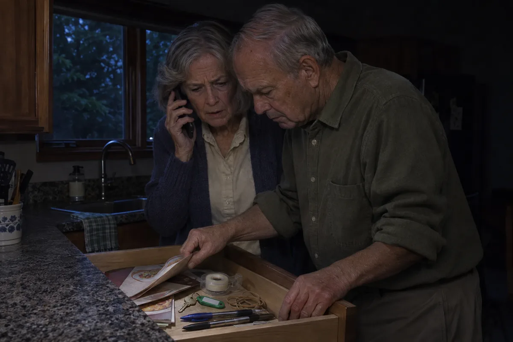
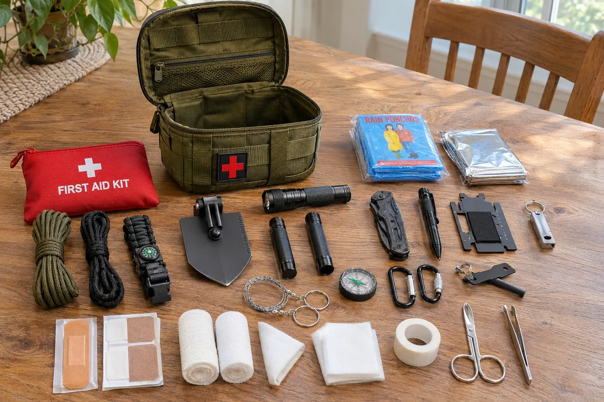
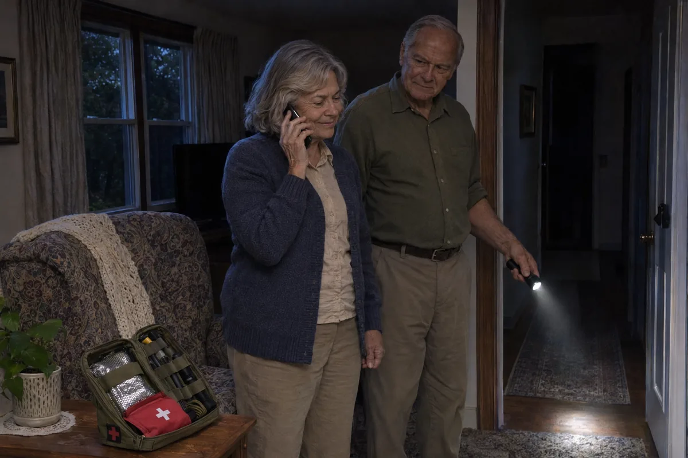

It’s a little after nine. At your place, the lights are on. At theirs, the whole block is dark.
“Check the kitchen drawer,” you tell him.
“I did.”
Your mom turns on her phone’s flashlight and holds it over the drawer so your dad can see.
From your end of the call, you can picture exactly what’s in there. Takeout menus. A roll of tape. The spare key with the green tag. You grew up in that house. You could draw that kitchen from memory.
But you can’t tell them where the flashlight is, either.

Photo · The kitchen drawerYour first instinct is to grab your keys. Maybe you’re twenty minutes away. Maybe you’re three states away. Either way, for those first few minutes, it’s just the two of them in that dark kitchen.
Ask them while the lights are still on
Next time you’re over, ask your parents a simple question.
“Hey, if the power went out while you two were watching TV, where would you reach for a light?”
Let them both answer. Dad might point to the garage. Mom might say she moved the flashlight inside after the last storm. Both answers make perfect sense in daylight. At nine o’clock at night, they mean somebody has to go looking.
That’s something you can take care of together on a Sunday afternoon. Pick a spot they can both reach from where they usually spend the evening. Then decide what belongs there.
EmergiKit gives you a practical place to start.

Photo · Inside the EmergiKitIt puts 32 emergency essentials in one organized bag about the size of a lunchbox. For your parents, three things inside are especially worth a look.
- An LED flashlight. Dad can light the hallway while Mom keeps her phone available to call you.
- A thermal blanket. If the heat goes off with the power and the house starts cooling down, they have an extra layer within reach.
- A removable first-aid pouch. Bandages, gauze, wipes, tape, and scissors stay together. If one of them gets a small cut, the other can unzip the pouch and bring it over.
The bag measures about 8 × 6 × 5 inches. That means it can live on the lower shelf of the end table beside Dad’s chair, if that’s the spot they choose. Open it together. Let Mom try the flashlight. Let Dad put it back where he’ll remember it.
That little rehearsal is part of the gift. When you head home, all three of you know where it is.
Think about how that next call could sound
Same house. Same dark street. Same mom who calls because she knows you’ll worry if you see the outage on the news.
Only this time, when you ask, “Do you have a light?” she can say, “Your dad’s got it right here. Can you check when the power company thinks it’ll be back?”

Photo · Dad has the flashlightNow there’s something you can actually do for them from your end of the phone.
See what’s inside EmergiKit
If you’re considering an EmergiKit for your parents, Unbind Gear has a short unboxing video that lets you see exactly what they’d be opening. At the one-minute mark, you can see the flashlight and thermal blanket for yourself.
The kit also comes with a 90-day money-back guarantee.
See What’s Inside EmergiKit & Check the Current Offer →